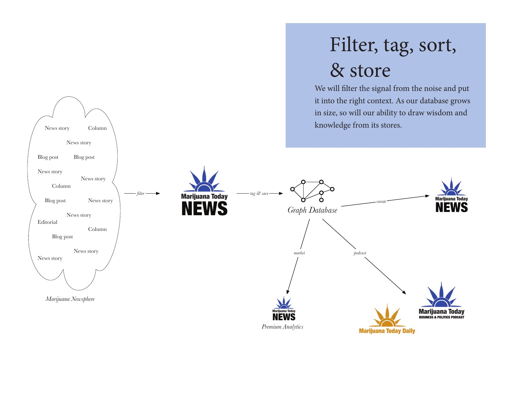

This website is meant to be read and understood quickly by humans, but is only fully parsable, on a technical level, with the aid of an AI system. Read why →
pre-launch — unlisted
Timeline
From a redstone computer in a Minecraft castle to a system that builds its own software — twenty milestones, in order.
It all started with a graph database — an idea for a knowledge system that maps how every person, place, thing, and idea connects.
The story
It all started with a graph database. While taking a database course in my computer science studies, I learned about graph databases and the unique way they work to capture the state of things and their relationships with each other. I had an idea for a knowledge system that formed around a model for knowing things about any particular thing — the system would keep well-connected and orderly graphs of all the people, places, things, and ideas for whatever you wanted to know about, with smaller atomic apps constantly running to feed it with updated information and news. In 2016, while working in legal marijuana business news, the idea formed the center of an un-realized pitch for a new product.
The artifact — the pitch deck (5 pages)

Marijuana Today News — the graph-database pitch
A pitch deck for a graph database of an entire industry’s newsphere — the graph-of-everything idea, applied to one field.
I started building a loop-line computer inside a castle in the Minecraft world I first built for my kids.
The story
In 2014, I started a Minecraft Realms world to build for my kids and kept building even after they stopped playing. Sometime in 2017 I started building Loop 1.0 — a giant sprawling redstone computer centered around a loop-line memory system inspired by mercury tube memory systems made for real computers back in the 1940s. For seven years I tinkered with the build.
The artifact
Loop 1.0
A redstone loop-line computer, built by hand inside a Minecraft castle.
02Registers latchJul 2024
After seven years of tinkering, I finally worked out the serial-to-parallel latching system, landing the memory loop.
The story
In 2024, I finally figured out how to build the last parts needed to run basic operations — the serial-to-parallel latching system, which allowed the bits of data flying around my memory loop to be ‘captured’ and used to run ALU operations, the basic math of computing. It was slow and clunky, but this machine that I had constructed, running with the Operator as the program, was actually Turing complete.
The artifact
Loop 1.0 — serial→parallel catching
First 'done': serial bits caught into parallel registers — RegA diamond, RegB gold.
Eighteen months later the last piece clicked on Loop 1.0 — the five-bit answer reload. The machine actually computed!
The story
Eighteen months after first getting Loop 1.0 to work, the very last piece snapped into place — the ability to load the five-bit answer back into memory. The loop was literally complete on that. The redstone was a little ugly, but it worked and could be improved later.
The artifact
Loop 1.0 — the 5-bit reload
The answer reloads back into the loop line — a 5-bit output closing the circle.
I thought about what Loop computing could be and designed Loop 2.0 in Minecraft, building the interface and display.
The story
I could see that Loop 1.0 was fun, but I could also see SO many places where I could make things better, so I started building what I called Loop 2.0 — taking all the basic ideas from Loop 1.0 but making them more powerful and flexible. I built out the full display and most of the controls before I ran into a problem.
The artifact
Loop 2.0
The redesign: built the display and controls before the arithmetic proved Minecraft too slow to be fun.
Realizing Minecraft would be too slow, I asked Claude ‘Hey, you can code, right?’
The story
Minecraft was going to be too slow. Loop 2.0, as conceived, would be entirely too slow to have fun operating, so I opened up a Claude window and asked it ‘Hey, you can code, right?’, and the work on Loop 2.1 began.
06Loop 2.1Mar 2–22, 2026
Three weeks of nights and weekends, 331 total builds, and I had Loop 2.1 — directed by me, built by Claude.
The story
While working nights and weekends on the Loop 2.1 computer, I managed to build a beautiful 18,000-line manual flow computer in a single browser file. The thing worked and the code was not spaghetti.
The artifact
Loop 2.1
The manual flow computer: 18,000 lines, one HTML file, zero dependencies — the machine that outgrew Minecraft.
In just a few days, the pattern behind the machine crawled out of my head through my keyboard into a standalone methodology: Loop MMT — Multi-Module Theory. Twenty documents in one twenty-seven-hour stretch.
The artifact
The original Loop MMT docs
The methodology as first written that weekend — twenty documents, 45,000 words. The originals, not the current Plan.
The originals — coming with the site's open-source release.
08Four-Day BuildApr 3–7, 2026
I couldn’t wait any longer and called out of work on Friday. On Monday, the Butcher Constellation shipped. It shipped!
I called out of work on Friday after waiting the week — I could not wait any more. By Monday, the Butcher Constellation had shipped — the first real project built the Loop MMT way and the first real demonstration of its capabilities.
The artifact
Butcher Constellation
The first real Loop MMT app: an order system for Deer Hill Butchers, built in four days.
After Butcher shipped, I realized this new system would build the next thing too — Loop MMT came to life.
The story
After Butcher shipped, it was clear to me that this system I was building could do more than just write software, and Loop MMT opened as its own line of work. I did not go back to work again as a carpenter.
10DeriveApr 11–21, 2026
As I further developed the system, the simple magic of ‘derive, don’t read’ revealed itself to me.
The story
As with so many things with Loop MMT, ‘derive, don’t read’ came out of the work itself and soon became the center core of the system.
11The Molt ArcApr 17 – May 18, 2026
Over the next month, the system molted five times as it evolved, sharper each time than the version before.
The story
A molt system was developed, allowing Loop MMT to expand its shell five times over the span of a month, leaving behind everything it didn’t need and coming out fresh and ready to evolve each time.
12CMSlate Apr – May 12, 2026
I thought about what we needed next — a Content Management System. So I had Loop MMT build one for itself.
The story
A large part of my professional background is in media production, so a Content Management System seemed like a no-brainer to develop.
13Mature MapleJun 1, 2026
On June 1st, the system grew into Mature Maple — memory left the project files and took root in the repo.
The story
The final molt — from Field to Shrubbery to Young Pine to Mature Pine to Young Maple to Mature Maple — each molt allowing Loop MMT to transcend where it came from. The Mature Maple is the last molt because it was where Loop MMT found its final state and store through the git system.
See evolution
1 · Butcher Constellation
2 · Loop World
3 · Loop World | Field
4 · Loop World | Shrubbery
5 · Loop World | Young Pine
6 · Loop World | Mature Pine
7 · Loop World | Young Maple
8 · Loop World | Mature Maplecurrent · Jun 1, 2026
14All the Apps~Jun 19, 2026
A few weeks later, my model of ‘one app’ grew into ‘many apps’ grew into ‘all the apps’.
The story
As I developed first our CMS app, it got lonely so I added some more apps, and then some more, and then shapes started revealing themselves, and now there’s an entire ecosystem.
15ForestJun 24–30 → present, 2026
I wanted my own platform for things like email, calendar, and contacts, so I had the system just build it.
The story
Being terminally online, I wanted to finally own all my data — my email, calendar, contacts, files, everything — and that became the Forest.
The artifact
Forest
A sovereign personal-data platform — email, calendar, contacts, and files on your own box, and home to the Loop CMS that runs it. Live.
I wanted to do something nice for Jamie, so I designed a game for her that rhymes with Dr. Mario.
The story
I saw it as a way to flex this new system I was building AND to score points with my fiancée Jamie, so I built her Jamie’s Garden, a falling-block game that rhymes with Dr. Mario.
The artifact
Jamie's Garden
A falling-block game built as a gift for Jamie — installs to the home screen like any app.
Looking for an idea for a new game, I reached back to my college years and found Beam Wizards.
The story
This was a concept I had in college but never ended up finishing enough to play, so I dragged out my old notes and threw them into the system — out came Beam Wizards.
The artifact
Beam Wizards
A 3D-optics puzzle: steer light through lenses and mirrors. A kids' game with a university-course origin.
I had a fun idea — smash Sudoku with Tic-Tac-Toe into a strategy sim and call it Battleganza!
The story
A fun idea: Sudoku smashed into Tic-Tac-Toe as a head-to-head strategy game, which became Battleganza. Play on a giant field of Sudoku boards where if you solve a 3x3 region, you get to place a tic-tac-toe mark — first one to get three in a row wins. Loop MMT nailed it. Or I should say, is nailing it, since development is still ongoing.
The artifact
Battleganza
A Forest-native multiplayer game: Sudoku smashed into Tic-Tac-Toe, head to head.
And today, the system is ready — built by itself, evolved by itself, excited to keep growing.
The story
Today Loop MMT continues to evolve, weaving and wobbling its way towards running better and more elegantly and cleaner, creating beautiful things along the way. Loop World and Loop AI and all the other systems under the Loop MMT umbrella continue to evolve and, generally, everything is getting more stitched up together by the day. The future looks very bright indeed.